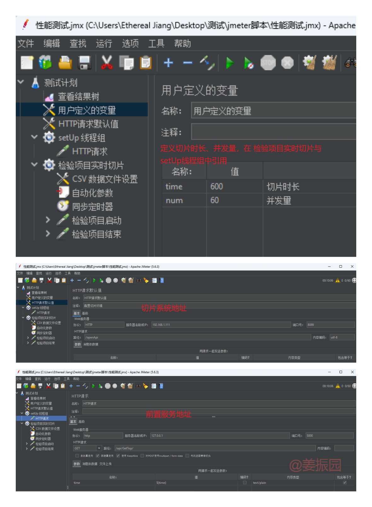

背景
我负责的一个项目经过长时间的开发，终于在客户现场正式运行了。 虽然正式运行前的很长一段时间里我一直在计划进行一次性能测试，但由于各种原因，测试一直没有进行。 我们的运维人员在正式运行前进行了试运行，结果在一定数量的并发下，硬盘顶不住，系统直接卡死了。 我就进行了一次性能测试。
本文记录了我的大概测试思路及方法。
影响项目性能的因素分析
这个项目的主要功能是对监控设备的视频流进行切片、存储，然后生成URL供平台调阅。它主要分为两个部分，切片系统、存储系统。项目中，不同存储方式导致项目架构不同。
项目提供3中存储方式——本地存储、S3接口存储、智能云存储。其中，S3接口存储、智能云存储需额外配置存储服务器，与切片服务器分开，切片视频文件放在存储服务器中；
本地存储则不需额外配置存储服务器，直接把切片视频文件放在切片服务器中。
进行性能测试，首先要知道影响项目性能的因素有那些。与研发沟通后，确定切片系统需关注cpu使用率、平均负载、内存使用。存储系统需关注存储cpu使用率、内存使用率、平均负载、系统读写带宽信息、硬盘读写带宽信息。
非本地存储时，还需关注切片服务器与存储服务器之间的网络宽带信息。
策划初步测试方案
首先需要明确，此项目主要功能的流程。
由此初步策划出两套测试方案
-
第一套
-
使用Jmeter下发切片指令，切片服务器中使用top命令获取切片服务器切片过程中的cpu、平均负载、内存等信息 -
切片完成后。存储服务器中使用top命令获取切片视频存储过程中的cpu、平均负载、内存等信息，使用iostat命令获取切片视频存储过程中存储服务器存储过程中的硬盘信息；切片服务器中使用nload命令获取切片视频存储过程中的网络传输信息 -
分析并整理获取到的所有信息 -
制作成结果图表
-
-
第二套
-
使用Jmeter下发切片指令后，切片服务器中使用top命令获取切片服务器中的cpu、平均负载、内存等信息，使用iostat命令获取切片服务器存储过程中的硬盘信息 -
分析并整理获取到的所有信息（分出切片、存储两个时间段） -
制作成结果图表
-
搭建测试方案所需环境
以第一套为例：
-
准备切片服务器
-
服务器系统使用Linux系统 -
服务器中部署切片服务 -
服务器中安装iostat、nload
-
-
准备存储服务器
-
服务器中部署存储服务 -
服务器中安装iostat
-
-
编写服务器脚本，获取服务器信息
-
服务器中编写所需top、iostat、nload脚本命令#!/bin/bash # top脚本，用于切片服务器、存储服务器 # 总循环时间（秒） total_time=$1 # 检查是否提供了总时间参数 if [ -z "$total_time" ]; then echo "Usage: $0 <total_time>" exit 1 fi # 记录开始时间 start_time=$(date +%s) # 循环直到达到总时间 while true; do # 计算当前时间与开始时间的差值（秒） current_time=$(date +%s) elapsed_time=$((current_time - start_time)) # 如果已经达到或超过总时间，则退出循环 if [ $elapsed_time -ge $total_time ]; then break fi # 执行提供的命令 top -n 1 -b | head -n 6 >> /top.log # 睡眠2秒 sleep 2 done#!/bin/bash # iostat脚本，用于切片服务器、存储服务器 # 总持续时间（秒） total_time=$1 # 检查是否提供了总时间参数 if [ -z "$total_time" ]; then echo "Usage: $0 <total_time>" exit 1 fi # 记录开始时间 start_time=$(date +%s) # 启动 iostat命令 并将输出重定向到日志文件，同时将其放入后台运行，根据需要写iostat。 (iostat -x -m -t 2 > /iostat.log) & # 保存 nload 的进程ID PID=$! # 等待$1秒 sleep $1 # 终止 iostat 进程 kill $PID#!/bin/bash # nload脚本，用于切片服务器 # 总持续时间（秒） total_time=$1 # 检查是否提供了总时间参数 if [ -z "$total_time" ]; then echo "Usage: $0 <total_time>" exit 1 fi # 启动 nload 并将输出重定向到日志文件，同时将其放入后台运行 (nload eno1 -u M -m -t 1500 > /nload.log) & # 保存 nload 的进程ID PID=$! # 等待60秒 sleep $1 # 终止 nload 进程 kill $PID
-
-
使用python编写服务远程执行top、iostat脚本
主要为了一键自动化，不需要自己手动执行top、iostat脚本。
思路是，使用Flask实现一个前置服务，Jmeter下发切片指令前请求前置服务，自动远程执行top、iostat等脚本。
代码如下：
# Getdata.py import paramiko import time import threading from flask import Blueprint, jsonify, request GetData = Blueprint('GetData', __name__, template_folder='templates') def create_ssh_client(hostname, port, username, private_key_path): """创建并返回一个SSH客户端的辅助函数。""" private_key = paramiko.RSAKey.from_private_key_file(private_key_path) client = paramiko.SSHClient() client.set_missing_host_key_policy(paramiko.AutoAddPolicy()) client.connect(hostname, port=port, username=username, pkey=private_key) return client def execute_command_async(client, command): """在SSH客户端上执行命令的辅助函数。""" stdin, stdout, stderr = client.exec_command(command) stdout.channel.recv_exit_status() def fetch_files(ssh_client, remote_path, local_path): """从远程服务器拉取文件的辅助函数。""" try: with ssh_client.open_sftp() as sftp_client: sftp_client.get(remote_path, local_path) print(f"成功获取 {remote_path} 到 {local_path}") except Exception as e: print(f"获取 {remote_path} 时出错: {e}") def delete_remote_files(client, filenames): """删除远程服务器上的文件的辅助函数。""" for filename in filenames: client.exec_command(f'rm {filename}') def test165(long, client, hostname_command): """切片快结束时，执行存储服务器上的脚本。""" time.sleep(long - 10) execute_command_async(client, hostname_command) @GetData.route('/api/GetTop/', methods=['GET']) def gettop(): """获取切片时长""" long = int(request.args.get("time")) print(long) """定义脚本执行时长""" shi = 600 def background_task(): """定义服务器的信息""" hostname1 = '192.168.1.111' hostname2 = '192.168.1.112' port = 22 username = 'root' private_key_path = r"C:\Users\Ethereal Jiang\.ssh\id_rsa" """实例化ssh客户端并执行脚本命令。使用多线程是两个服务器互不影响。""" client1 = None client2 = None try: client1 = create_ssh_client(hostname1, port, username, private_key_path) client2 = create_ssh_client(hostname2, port, username, private_key_path) hostname1_command = f'bash /opt/top_start.sh {long + shi} & bash /opt/iostat_start.sh {long + shi}' hostname2_command = f'bash /opt/top_start.sh {shi} & bash /opt/iostat_start.sh {shi}' thread1 = threading.Thread(target=execute_command_async, args=(client1, hostname1_command)) thread2 = threading.Thread(target=test165, args=(long, client2, hostname2_command)) thread1.start() thread2.start() thread1.join() thread2.join() except Exception as e: print(f"An error occurred: {e}") finally: if not client1: client1 = create_ssh_client(hostname1, port, username, private_key_path) if not client2: client2 = create_ssh_client(hostname1, port, username, private_key_path) fetch_files(client2, '/top.log', 'D:\\test\\165\\top.log') fetch_files(client2, '/iostat.log', 'D:\\test\\165\\iostat.log') delete_remote_files(client2, ['/top.log', '/iostat.log']) fetch_files(client1, '/top.log', 'D:\\test\\169\\top.log') fetch_files(client1, '/iostat.log', 'D:\\test\\169\\iostat.log') delete_remote_files(client1, ['/top.log', '/iostat.log']) if client1: client1.close() if client2: client2.close() print('结束' + str(time.time())) task_thread = threading.Thread(target=background_task) task_thread.start() return jsonify({"status": "任务已开始在后台处理"}), 202# app.py from flask import Flask from Getdata import GetData app = Flask(__name__) app.secret_key = 'jiang' app.register_blueprint(GetData) if __name__ == '__main__': app.run() -
编写Jmeter脚本，下发切片指令
运行脚本后，首先会请求前置服务，执行服务器脚本，然后，开始并发切片指令。结束后，前置服务自动拉取信息文件到本地。
测试结束后后，分析、整理本地数据
每次并发测试三轮，信息文件放在对应的文件夹中。使用Notepad++和WPS表格处理数据。
Notepad++查询复制数据，WPS表格分列数据
将分析整理后的数据制作成图表
我使用的是cdn库的Chart.js，还是比较强的，可以访问Chart.js学习使用。示例如下：
<!DOCTYPE html>
<html>
<head>
<meta charset="utf-8">
<title>性能测试</title>
<script src="https://cdn.staticfile.net/Chart.js/3.9.1/chart.js"></script>
<script src="https://cdn.jsdelivr.net/npm/chartjs-plugin-datalabels@2.0.0"></script>
<style>
body {
background: #9e9e9e1a;
margin: 0; /* 移除默认的外边距 */
}
.card {
padding: 0 3%;
background: #fff;
border: 1px solid #dcdee2;
border-color: #e8eaec;
border-radius: 15px;
width: 80%;
/* 设置左右边距为自动 */
margin: 2% auto;
}
.data {
margin-top: 2%;
margin-bottom: 4%;
}
</style>
</head>
<body>
<div class="card">
<div class="data">
<span>5个并发</span>
<canvas id="c5_169"></canvas>
</div>
<div class="data">
<canvas id="c5_165" ></canvas>
</div>
</div>
<script>
// 并发5
const c5_169_Ctx = document.getElementById('c5_169');
const c5_169_Labels = ['%错误率', '切片-%CPU最大使用率', '切片-CPU最大负载(1分钟)','切片-内存最大使用-GiB', '平均宽带速率-MByte/s', '最小宽带速率-MByte/s', '最大宽带速率-MByte/s', '视频总体积-GByte', '总流程时间(分)', '存储写入时长(分)', '存储-%CPU最大使用率', '存储-CPU最大负载(1分钟)', '存储-内存最大使用率-GiB' ]; // 设置 X 轴上对应的标签
const c5_169_Data = {
labels: c5_169_Labels,
datasets: [{
label: '结果',
data: [0, 11.16666667, 0.906666667, 6.707091217, 53.87263617, 8.97, 69.28666667, 1.86, 10.61666667, 0.555555556, 20.66666667, 1.936666667, 24.95719945],
backgroundColor: [
'rgba(255, 99, 132, 0.2)', // 粉色
'rgba(255, 159, 64, 0.2)', // 橙色
'rgba(255, 205, 86, 0.2)', // 浅黄色
'rgba(75, 192, 192, 0.2)', // 青绿色
'rgba(153, 102, 255, 0.2)', // 紫罗兰
'rgba(255, 206, 86, 0.2)', // 金色
'rgba(75, 191, 92, 0.2)', // 橄榄绿
'rgba(120, 75, 192, 0.2)', // 深紫罗兰
'rgba(255, 92, 159, 0.2)', // 品红色
'rgba(92, 255, 206, 0.2)', // 浅绿松石色
'rgba(206, 92, 255, 0.2)', // 浅洋红色
'rgba(159, 255, 92, 0.2)', // 浅黄色绿色
'rgba(102, 86, 255, 0.2)' // 浅灰蓝色
],
borderColor: [
'rgb(255, 99, 132)', // 粉色
'rgb(255, 159, 64)', // 橙色
'rgb(255, 205, 86)', // 浅黄色
'rgb(75, 192, 192)', // 青绿色
'rgb(153, 102, 255)', // 紫罗兰
'rgb(255, 206, 86)', // 金色
'rgb(75, 191, 92)', // 橄榄绿
'rgb(120, 75, 192)', // 深紫罗兰
'rgb(255, 92, 159)', // 品红色
'rgb(92, 255, 206)', // 浅绿松石色
'rgb(206, 92, 255)', // 浅洋红色
'rgb(159, 255, 92)', // 浅黄色绿色
'rgb(102, 86, 255)' // 浅灰蓝色
],
borderWidth: 1 // 设置线条宽度
}]
};
const c5_169_Config = {
type: 'bar', // 设置图表类型
data: c5_169_Data, // 设置数据集
options: {
scales: {
y: {
beginAtZero: true // 设置 y 轴从 0 开始
}
},
plugins: {
title: {
display: true,
text: '' // 这里设置图表的标题
},
datalabels: {
anchor: 'end',
align: 'top',
formatter: function(value, context) {
return value.toFixed(2); // 设置标签格式
}
}
}
},
plugins: [ChartDataLabels]
};
const c5_169_Chart = new Chart(c5_169_Ctx, c5_169_Config);
const c5_165_ctx = document.getElementById('c5_165');
const c5_165_labels = ['avg-wMB/s', 'min-wMB/s', 'max-wMB/s','avg-w_await', 'min-w_await', 'max-w_await', 'avg-%util', 'min-%util', 'max-%util']; // 设置 X 轴上对应的标签
const c5_165_data = {
labels: c5_165_labels,
datasets: [{
label: 'sdb',
data: [52.36925926, 5.89, 83.85, 28.26445534, 8.703333333, 59.62, 89.57178649, 28.28333333, 98.7],
backgroundColor: [ // 设置每个柱形图的背景颜色
'rgba(55, 163, 236, 0.2)',
'rgba(76, 193, 192, 0.2)',
'rgba(256, 205, 87, 0.2)',
'rgba(152, 103, 254, 0.2)',
'rgba(254, 160, 65, 0.2)',
'rgba(254, 100, 133, 0.2)',
'rgba(154, 101, 254, 0.2)',
'rgba(254, 160, 66, 0.2)',
'rgba(254, 98, 133, 0.2)'
],
borderColor: [ //设置每个柱形图边框线条颜色
'rgba(55, 163, 236)',
'rgba(76, 193, 192)',
'rgba(256, 205, 87)',
'rgba(152, 103, 254)',
'rgba(254, 160, 65)',
'rgba(254, 100, 133)',
'rgba(154, 101, 254)',
'rgba(254, 160, 66)',
'rgba(254, 98, 133)'
],
borderWidth: 1 // 设置线条宽度
},
{
label: 'sdc',
data: [52.37021786, 6.886666667, 83.69333333, 26.18413943, 7.443333333, 60.51333333, 87.21247277, 23.35, 97.43333333],
backgroundColor: [ // 设置每个柱形图的背景颜色
'rgba(55, 163, 236, 0.2)',
'rgba(76, 193, 192, 0.2)',
'rgba(256, 205, 87, 0.2)',
'rgba(152, 103, 254, 0.2)',
'rgba(254, 160, 65, 0.2)',
'rgba(254, 100, 133, 0.2)',
'rgba(154, 101, 254, 0.2)',
'rgba(254, 160, 66, 0.2)',
'rgba(254, 98, 133, 0.2)'
],
borderColor: [ //设置每个柱形图边框线条颜色
'rgba(55, 163, 236)',
'rgba(76, 193, 192)',
'rgba(256, 205, 87)',
'rgba(152, 103, 254)',
'rgba(254, 160, 65)',
'rgba(254, 100, 133)',
'rgba(154, 101, 254)',
'rgba(254, 160, 66)',
'rgba(254, 98, 133)'
],
borderWidth: 1 // 设置线条宽度
},
{
label: 'sdd',
data: [52.37001089, 6.553333333, 83.18666667, 26.98811547, 8.673333333, 56.51, 89.42472767, 26.16666667, 98.3],
backgroundColor: [ // 设置每个柱形图的背景颜色
'rgba(55, 163, 236, 0.2)',
'rgba(76, 193, 192, 0.2)',
'rgba(256, 205, 87, 0.2)',
'rgba(152, 103, 254, 0.2)',
'rgba(254, 160, 65, 0.2)',
'rgba(254, 100, 133, 0.2)',
'rgba(154, 101, 254, 0.2)',
'rgba(254, 160, 66, 0.2)',
'rgba(254, 98, 133, 0.2)'
],
borderColor: [ //设置每个柱形图边框线条颜色
'rgba(55, 163, 236)',
'rgba(76, 193, 192)',
'rgba(256, 205, 87)',
'rgba(152, 103, 254)',
'rgba(254, 160, 65)',
'rgba(254, 100, 133)',
'rgba(154, 101, 254)',
'rgba(254, 160, 66)',
'rgba(254, 98, 133)'
],
borderWidth: 1 // 设置线条宽度
}]
};
const c5_165_config = {
type: 'bar', // 设置图表类型
data: c5_165_data, // 设置数据集
options: {
scales: {
y: {
beginAtZero: true // 设置 y 轴从 0 开始
}
},
plugins: {
title: {
display: true,
text: '存储-硬盘信息' // 这里设置图表的标题
},
datalabels: {
anchor: 'end',
align: 'top',
formatter: function(value, context) {
return value.toFixed(2); // 设置标签格式
}
}
}
},
plugins: [ChartDataLabels]
};
const c5_165_Chart = new Chart(c5_165_ctx, c5_165_config);
</script>
</body>
</html>
效果还是挺好的。

© 转载需要保留原始链接，未经明确许可，禁止商业使用。CC BY-NC-ND 4.0